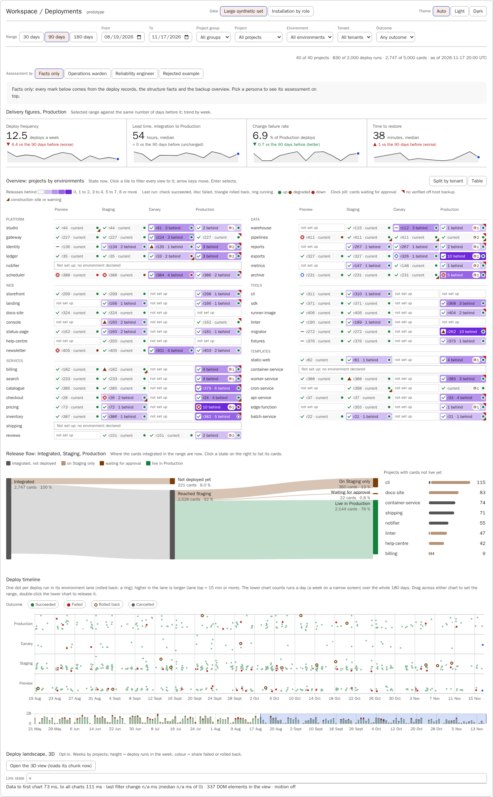
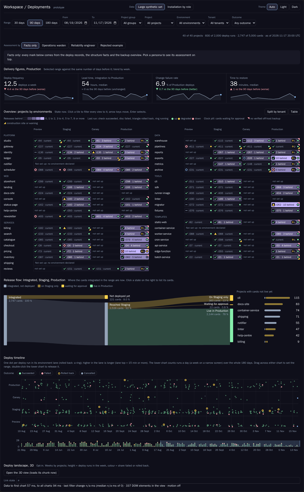
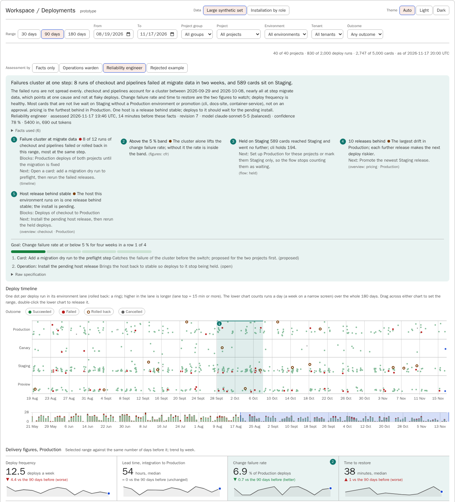
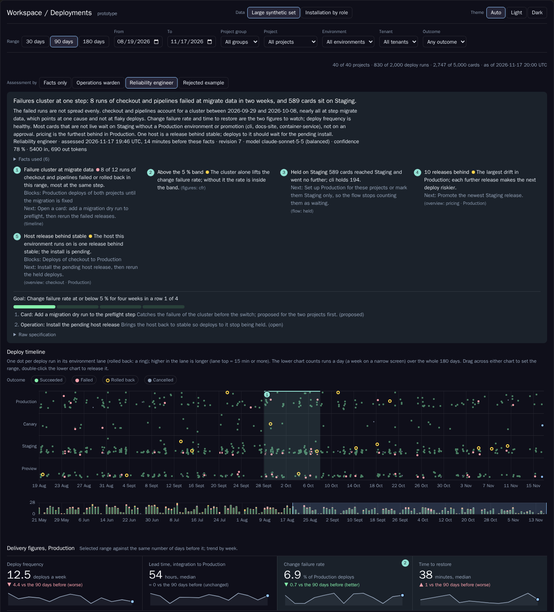

Concept Dossier · AGT-3950
Deployment dashboard charts
Workspace / Deployments as strongly visual, dynamically drawn charts: a tile map of projects by environments, a release flow, a deploy timeline with a time brush, delivery figures and an opt-in 3D landscape. One aggregate request, filters in the link, a click on a mark filters the other views, and persona assessments on top of plain facts. Framework and budget are measured in a working prototype.
Summary
On 17 November 2026 the owner said of Workspace / Deployments, a plain table and a long card column: "Das ist keine coole Darstellung", and asked for strongly visual, dynamically created graphics on a standard framework, gladly 3D, gladly with interactive filters, with performance as the condition. This page holds what the owner decides: alternatives, recommendation, evidence, 10 open decisions and 8 slices. Three chapters carry the detail and the live prototype can be used.
Where this stands. The card belongs to the hosting family. The live structure canvas (AGT-3955, docs/live-structure-canvas/, on develop, accepted) decides the visual stack of the hosting area and recommends uPlot as the one chart library and an own Canvas 2D engine as the one canvas renderer. This Dossier tests that choice on the deployment views against Apache ECharts and Chart.js and builds on it. The topology of hosts, containers and services is not drawn here: it is that canvas (D6). Dashboard data (AGT-3949) and structure facts (AGT-3954) are on develop; the instance deploy records (AGT-3879) are not, and are assumed as its card describes them.


prototype.html, commit base ca26ce2ef) by capture.mjs, headless Chromium, 1440 px, light and dark. Data: the seeded synthetic set of src/data.js, not a product state.Answers to the brief
| Asked | Answer | Detail |
|---|---|---|
| Framework, measured | Three candidates drew the same four views from the same aggregate. uPlot with three small own forms has the smallest chunk and the fastest filter change; it is also the library the structure canvas Dossier recommends, so the Studio keeps one. | Framework |
| Wrapper | A thin own chart host: signal inputs, one instance reused, ResizeObserver, dispose on destroy, behind a dynamic import. | Wrapper |
| 3D where it carries data | One opt-in view, the deploy landscape: weeks by projects, height = runs, colour = failed share. Drawn with Canvas 2D, loaded when opened, flattens into its 2D heat map. echarts-gl and three.js were measured as the WebGL routes. | 3D |
| Views | Overview tile map, release flow with a virtualised card list, deploy timeline with brush, delivery figures; on the synthetic large set and on an installation-shaped set by role. | Views and filters |
| Topology | Dropped here as the addendum asks; it is the live structure canvas, docs/live-structure-canvas/index.html. A tile links to its node there. | D6 |
| Filters | Project group, project, environment, tenant, time range, outcome; a clicked tile, flow state, legend entry or brushed range filters every view; state in the link; keyboard reachable. | Filters |
| Performance budget | Measured in the prototype and written down with the limit for each item; the aggregation each view needs is named. | Budget |
| Assessments by personas | Facts from the APIs, assessments as validated view specifications by the operations warden and the reliability engineer; backup goal and construction sites pinned to tiles; cost and freshness stated. | Assessments |
| Screenshots | Every view in light and dark at 1440 px and 390 px. | Captures |
Alternatives
Chart framework
A · uPlot plus small own forms
uPlot (MIT) draws the two time charts. The tile map and the sparklines are drawn on Canvas 2D and the release flow as SVG, 6.6 kB gzip together, on the Studio tokens. Smallest and fastest; the forms are ours to maintain, and so is accessibility. uPlot's last release is of March 2025.
B · Apache ECharts 6
The baseline of the brief (Apache-2.0, active): heat map, sankey, scatter, brush, dataZoom, legend and an aria module out of the box, tree-shaken from echarts/core. One framework for every form; the largest chunk and the slowest update of the three.
C · Chart.js 4 with plugins
Familiar API (MIT, active); matrix, sankey and zoom come from three separate plugins with their own release rhythm. Middle size; no brush component, no built-in accessibility.
| Candidate | Chunk, gzip | First chart | All views | Filter change, median and p95 |
|---|---|---|---|---|
| A · uPlot 1.6 plus own forms | 29.9 kB | 50 ms | 83 ms | 33 ms, 53 ms |
| B · Apache ECharts 6.1 | 220.7 kB | 132 ms | 392 ms | 83 ms, 383 ms |
| C · Chart.js 4.6 with matrix, sankey and zoom plugins | 82.1 kB | 74 ms | 141 ms | 33 ms, 67 ms |
3D
A · Canvas 2D, opt-in
An orthographic scene of boxes sorted back to front. No WebGL, no library, a chunk of its own; turns, tilts and flattens.
B · three.js
Real lighting and far more bars than this view needs, for a second renderer in the Studio and a chunk many times the 2D charts.
C · echarts-gl
Only with ECharts. Its package declares ECharts 6 support in the one release since March 2022; see the measurement for whether it ran.
Wrapper, data and composition
Wrapper: a thin own host, a wrapper library, or none (D2). Data: one aggregate for all views, one endpoint a view, or today's joins of per-project requests in the browser (D10). Composition: facts only, a persona's assessment on top of facts, or a model-composed page (D9). Each is laid out in Framework, budget and data and Assessments.
Recommendation
Build the deployment page on candidate A, on one aggregate, with 2D as the default and the landscape as the one opt-in 3D view.
- Framework A, uPlot plus small own forms (D1), hosted by a thin own Angular chart host (D2). It meets every budget item with the largest margin and keeps the hosting area on one chart library and one canvas technique, as the structure canvas Dossier recommends. ECharts is the fallback if the owner weighs "standard framework for every form" higher than bytes and update time: the measurement shows what that costs.
- Overview and release flow first (D3), on real data through
GET /api/deploy/dashboard(D10). These two need no library at all, so slice DDC-1 proves the aggregate, the filters and the budget; uPlot arrives with the timeline in DDC-3. - Landing view: delivery figures and the tile map, flow and timeline below (D5). Topology stays in Operations as the structure canvas (D6).
- 3D: yes, opt-in, the deploy landscape on Canvas 2D (D4). Honest cost: bars hide bars, a height is harder to compare than a colour step, and labels thin out; the bytes are small because no WebGL library is loaded. The 2D heat map stays the reference and one button flattens the scene into it.
- Assessments: operations warden and reliability engineer (D7) write validated view specifications on top of facts (D9), refreshed on fact changes with a 12-hour check (D8). The backup goal and every missing backup are visible on the tiles with Facts only too.
Evidence
The same aggregate, the same four views and the brush, drawn by each candidate in the bench harness (bench/): A needs 29.9 kB gzip, B 220.7 kB and C 82.1 kB. All five views are painted 83 ms after the data arrives with A, 392 ms with B and 141 ms with C; a filter change costs 3.2, 57.2 and 19.2 ms of script. B meets the 300 ms budget for the first chart but not for the page, and its p95 filter change of 383 ms is over the 100 ms budget; A and C are inside every limit, A with the largest margin and a third of C's bytes. The full table and the method are in Framework.
| Budget | Limit | Measured in the prototype |
|---|---|---|
| 2D chart chunk | At most 35 kB gzip with uPlot and its styles | 29.4 kB gzip (67.5 kB raw), of which uPlot 23.3 kB |
| 3D chunk | At most 4 kB gzip, requested only when the 3D view opens | 2.4 kB gzip; requests for it before opening: 0, after opening: 1 |
| First chart | Within 300 ms after the data arrives, mid-range laptop | 59 ms to the first chart and 95 ms to all views (median of 5 loads of the prototype, large set, 1440 px) |
| Filter change | Within 100 ms on the large set | 19 ms median, 42 ms p95 over 20 scripted changes, to the painted frame |
| DOM | No element per card outside a virtualised list | 297 elements in the whole view with 2,000 runs and 5,000 cards; 17 row elements in the list of 4,019 cards |


prototype.html, commit base ca26ce2ef) by capture.mjs, headless Chromium, 1440 px, light and dark. Data: the seeded synthetic set of src/data.js, not a product state.

prototype.html, commit base ca26ce2ef) by capture.mjs, headless Chromium, 1440 px, light and dark. Data: the seeded synthetic set of src/data.js, not a product state./api/deploy/matrix request, read once, and one delivery-lanes request per project, polled every 15 seconds; filters are not in the URL; no list is virtualised (frontend/src/app/features/deployments/).frontend/src/app/features/structure/live/).bench/results.json (frameworks and 3D routes, five runs each), bench/chunks.json (lazy chunks of the prototype) and assets/prototype-metrics.json (budget rows, written by verify.mjs).Open decisions
Each decision has a recommended working option; it stands until the owner records another. D1 and D7 repeat choices the structure canvas Dossier recommends (its D2 and D9), and D4 stays inside its D1 and D3 (2D by default, no WebGL renderer), so that both pages get one stack and one pair of assessors.
D1 · Chart framework
Which chart framework draws the deployment dashboard and, with it, every chart of the hosting area?
Smallest lazy chunk and fastest filter change in the prototype, one library for the Studio as the structure canvas Dossier already recommends; ECharts stays the measured fallback when a form is needed that is not worth building.
D2 · Angular wrapper
How do Angular components host a chart?
A small component, no second dependency to keep in step with Angular and the library, and the same host serves uPlot and the own forms.
D3 · Views first
Which views are built first?
Overview and flow replace the table and the long card column the owner criticised; they need no library, so the first slice proves data, filters and budget.
D4 · 3D
Is there a 3D view, and with which renderer?
The third axis carries the run count and the view flattens into its 2D heat map; 2.4 kB gzip instead of a second renderer of more than 100 kB, in line with one canvas renderer for the Studio.
D5 · Landing view
What does Workspace / Deployments open with?
Answers what is live where and what is behind before any scrolling; a persona may reorder the views for its reader (D9).
D6 · Topology
Where does the topology of hosts, containers and services live?
One drawing of the machines; the canvas has its own concept (AGT-3955) and renderer, and two copies would drift apart.
D7 · Roles that assess
Which personas assess the deployment views?
Backups, credentials and goals belong to the warden, failure clusters and flow to the reliability engineer; same choice as the structure canvas, so one occurrence can serve both views.
D8 · Refresh cadence
When do the personas reassess the deployment views?
Fresh after a deploy or a failure, no model call when nothing changed, and inside the weekly allowance of each persona.
D9 · How much the model composes
How much of the deployment page may be LLM-composed?
Facts, scales and colours stay deterministic and comparable from day to day; the persona says what matters and what to do next, and an invalid answer falls back to the facts.
D10 · Aggregation API
How do the views get their data?
One request and one consistent as-of for every view instead of 1 + N requests; filters change the query, not the number of calls.
Implementation
The slices are in workbench.json in delivery order, each with prompt and acceptance criteria. Already covered elsewhere: instance deploy records (AGT-3879), dashboard data (AGT-3949), structure facts and warnings (AGT-3954), the topology canvas (LSC-1 to LSC-10 of AGT-3955), persona scheduling and ledger (PT-3, PT-4). The links the brief asks for in the Nordstern map and in the Dossiers continued here are slice DDC-8, because a concept delivery may change only its own directory. No product code is changed here.
| Slice | Delivers | After |
|---|---|---|
| DDC-1 Deployment overview and release flow on the dashboard aggregate | Aggregate endpoint, chart host, overview tile map and release flow on real data, filters in the URL with cross-filter, budget checks as tests. | none |
| DDC-2 Card drill-down as a virtualised list | Paged card list of a flow state, windowed rendering, no DOM element per card outside the window. | DDC-1 |
| DDC-3 Deploy timeline with time brush on uPlot | uPlot as the Studio's chart library in its own lazy chunk; runs per environment over time with duration, outcome and failing step; brush sets the time range for every view. | DDC-1 |
| DDC-4 Delivery figures with sparklines | Deploy frequency, lead time from integration to Production, change failure rate and time to restore as stat tiles with weekly trend. | DDC-1 |
| DDC-5 Backup and construction-site marks on the deployment tiles | Every Production tile whose data has no verified off-host copy is marked; open warnings of the host or container an environment runs on are pinned to its tile. | DDC-1 |
| DDC-6 Persona view specifications for the deployment dashboard | Validated, cached view specifications by the operations warden and the reliability engineer on top of the facts; picker, provenance, goals, fallback to facts. | DDC-1, DDC-5 |
| DDC-7 Deploy landscape, the opt-in 3D view | Weeks by projects with height = runs and colour = failed share, drawn with Canvas 2D in its own chunk, loaded when opened. | DDC-3 |
| DDC-8 Register the deployment dashboard charts Dossier in the Nordstern map and add forward links | One map entry and one forward link each in the Dossiers this concept continues; no recorded decision changes. | none |